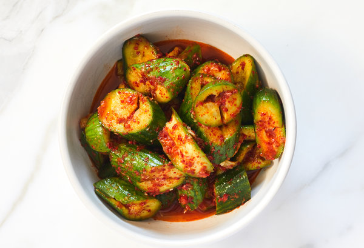

Back to Homepage

Description
Just some basic and fresh cucumbers, made with some Asian flair.
Ingredients
- 4 Persian cucumbers
- Half a Lemon
- Fried garlic chili oil from Asian market
- 2 tsp of Salt
Method
- Begin by slicing cucumbers into coins about a 1/4-1/2 inch thick
- Cross hatch score them on both sides
- Season with salt, toss together and let cure at room temperature for 15 mins
- Add fried spicy chili garlic, lemon juice and toss to coat
- Enjoy!